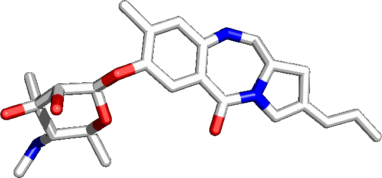
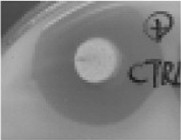
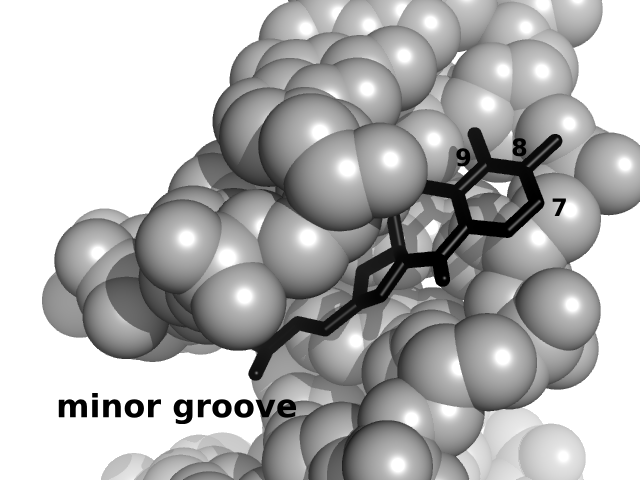

Project Marilyn: 9DS Xenograft Test

Isaac T Yonemoto
indysci dot org
History of Sibiromycin

Discovered in 1970s by Soviet researchers in Siberia
Antimicrobial activity "bioassay"

Adapted from Li, et. al, 2009 (AEM)
Found to have antineoplastic activity
Cardiotoxic in animal models
Mechanism of Sibiromycin Action

Reactive imine group alkylates exocyclic amine of DNA Guanine bases
Cationic sugar extends and binds to the phosphodiester backbone*
Twist imparted by chirogenic center makes the 6-7-5 ring fit into the minor groove
Evades base excision repair system
Sibiromycin Family


Adapted from Gerratana, 2012 (MRR)
Many PBDs have been discovered
The most potently antineoplastic PBDs are cardiotoxic
Neothramycin is not cardiotoxic and has limited clinical use
SJG-136
Adapted from Clingen, et. al., 2005 (NAR)
Synthetic compound developed by Spirogen
Presumably Similar Mechanism
Single-digit nanomolar
in vitro
activity
Very mild side effects
water retention
Mutasynthetic Scheme
Mutasynthetic Scheme

Synthesis Procedure
48 hours of culture
Centrifugation
Filtration
Wash/Extraction
Concentration
Silica Gel Chromatography
Size Exclusion Chromatography
~2.5mg/L yield
Results from Part I
NCI Cell line
Cancer class
Sibiromycin
9DS
SR
leukemia
25.1
3.2
NCI-H522
lung
120.2
7.6
MCF7
breast
131.8
8.5
SK-MEL-5
melanoma
154.9
14.1
GI
50
(nm) for selected cell lines
Project Marilyn Objectives
Production of 10+mg of 9DS
Delivery of 9DS to a xenograft CRO
Completion of a 5-armed xenograft study
Project Marilyn Secondary Objectives
Identification and testing of a new compound, "Satoshimycin"

Correction of Tm measurements
Project Marilyn Timeline
Lab Opening: Imminent (2-3 weeks)
Piloting batch of 9DS completed: 2 mo
Initial Analytic (NMR, MS) of 9DS completed: 3 mo
Delivery of 9DS to CRO: 6 mo
Completion of xenograft by CRO: 12 mo
Identification of Satoshimycin and other compounds: 1 mo
Analysis, NCI-60 of Satoshimycin: 6 mo